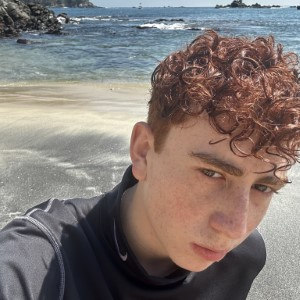

Donovan Zuñiga
Desarrollador Full Stack
Ultimo nivel de estudios: Preparatoria concluida en Cetis 01 especializado en Programación
Ultimo nivel de estudios: Preparatoria concluida en Cetis 01 especializado en Programación
MATEI Cortes Láser: Trabajando como cortador láser y diseñador.
Diseñador y cortador de lámparas de acrílico